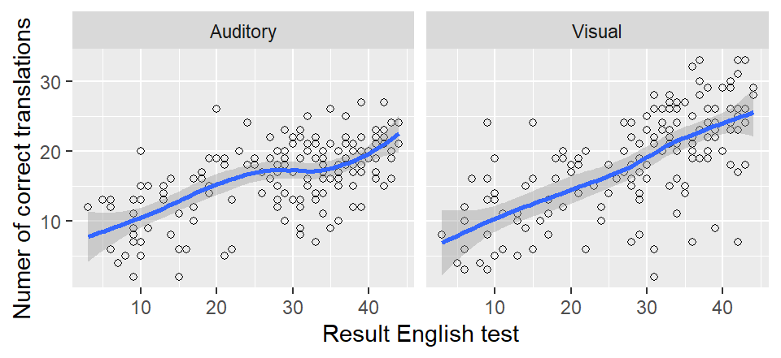
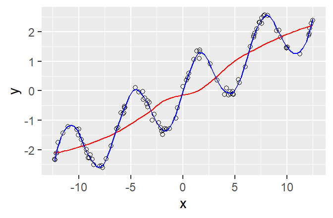

8 Week 8: Scatterplots with trend lines
8.1 Goal
You’ll learn to highlight the trend in the relationship between two variables using scatterplot smoothers.
8.2 Drawing scatterplot smoothers
ggplot(dat = per_part,
aes(x = English.Total,
y = number_correct)) +
geom_point(shape = 1) +
geom_smooth() + # add smoother
xlab("Result English test") +
ylab("Numer of correct translations") +
facet_grid(cols = vars(Mode))## `geom_smooth()` using method = 'loess' and formula
## = 'y ~ x'## Warning: Removed 6 rows containing non-finite outside the
## scale range (`stat_smooth()`).## Warning: Removed 6 rows containing missing values or values
## outside the scale range (`geom_point()`).
The blue line is the smoother;
the grey ribbon around it is known as a (95%) confidence band
and communicates our uncertainty about the precise location
of the smoother (due to lack of data and variability in the data).
Of course, you can change the colour of the line to suit
your personal taste, and you can turn off the grey ribbon (se = FALSE; se is short for ‘standard error’, which is unfortunate – a standard error and a confidence band aren’t the same thing).
We’re going to turn off the confidence band because it’s bound to be misinterpreted
anyway.
ggplot(dat = per_part,
aes(x = English.Total,
y = number_correct)) +
geom_point(shape = 1) +
geom_smooth(se = FALSE, colour = "red") +
xlab("Result English test") +
ylab("Numer of correct translations") +
facet_grid(cols = vars(Mode))## `geom_smooth()` using method = 'loess' and formula
## = 'y ~ x'## Warning: Removed 6 rows containing non-finite outside the
## scale range (`stat_smooth()`).## Warning: Removed 6 rows containing missing values or values
## outside the scale range (`geom_point()`).8.3 So what’s a scatterplot smoother anyway?
Scatterplot smoothers were developed to discover relationships (including nonlinear ones) between two variables that aren’t necessarily immediately obvious if the data are shown in a scatterplot. The points on the smoother are a kind of mean value of the \(Y\) variable for the respective \(X\) value. In the left panel, for instance, the average number of correct translations in the auditory mode for someone with an English test score of 30 is roughly 17–18, whereas the average number of correct translations for written words for participants with a score of 40 on the English test is about 25.
We needn’t amuse ourselves with the maths behind these smoothers, but the following points are important:
The trend line is nearly always a bit wiggly (to use the actual technical term). This is the case even when the relationship itself is as good as linear.
The uncertainty about the smoother is larger at the extremes (high and low \(x\) values). The confidence band is correspondingly wider at these places. But again, we’re not going to plot the confidence bands in order not to confuse ourselves or our readership.
The default settings for
geom_smooth()tend to work fairly well, but sometimes it’s necessary to fiddle with them so that the smoother captures the trend in the data better. See next section.
8.4 Examples of nonlinear relationships
This section serves to show you what true nonlinear relationships
can look like and how you sometimes need to fiddle with geom_smooth()’s settings.
In the first example, the red line was drawn with the default settings. This line doesn’t capture an important feature of the relationship (the data points go up and down). The blue line captures this trend much better. It was drawn using the command geom_smooth(span = 0.1). The span parameter determines how wiggly the curve may be (the smaller span, the wigglier the curve). By default, span is set to 0.75. Finding a decent span value is matter of trial and error.

In the second example, the red line was drawn
using geom_smooth(span = 0.1).
This line is much too wiggly, and it essentially
models random deviations from the general trend.
The blue line, drawn with the default setting (span = 0.75),
captures the general trend much more sensibly.
The green line, by contrast, isn’t wiggly enough (span = 3).
Summing up: Generally, the default settings work reasonably well. But when you notice that visually salient patterns
in the scatterplot aren’t captured by the trend line,
you need to fiddle a bit with the span parameter.
More generally, data analysis and statistics aren’t a matter of blindly applying formulae and recipes.
8.5 Exercise
Draw a scatterplot that shows the relationship between the participants’ age and their performance on the cognate translation task. How would you describe this relationship?
Now add a smoother (default settings) to this scatterplot. Does it capture the trend that you identified in the scatterplot?
Now fiddle with the span parameter (0.1, 0.2, 0.3 etc.)
Hand in the graph you think works best as well as the compiled HTML report.